Shared
Approved application · approved logoEvery image below is an actual canonical PNG. Open an image for its full resolution. These are authored design scenes, not current-app browser captures.
Search your notebook
search-initialActions and implementation pointers
× · Close
apps/web/src/app/(app)/@header/default.tsxapps/web/src/app/(app)/@header/_components/app-header.tsxapps/web/src/components/ui/sidebar.tsxapps/web/src/app/(app)/@header/_components/header-search-modal.tsx
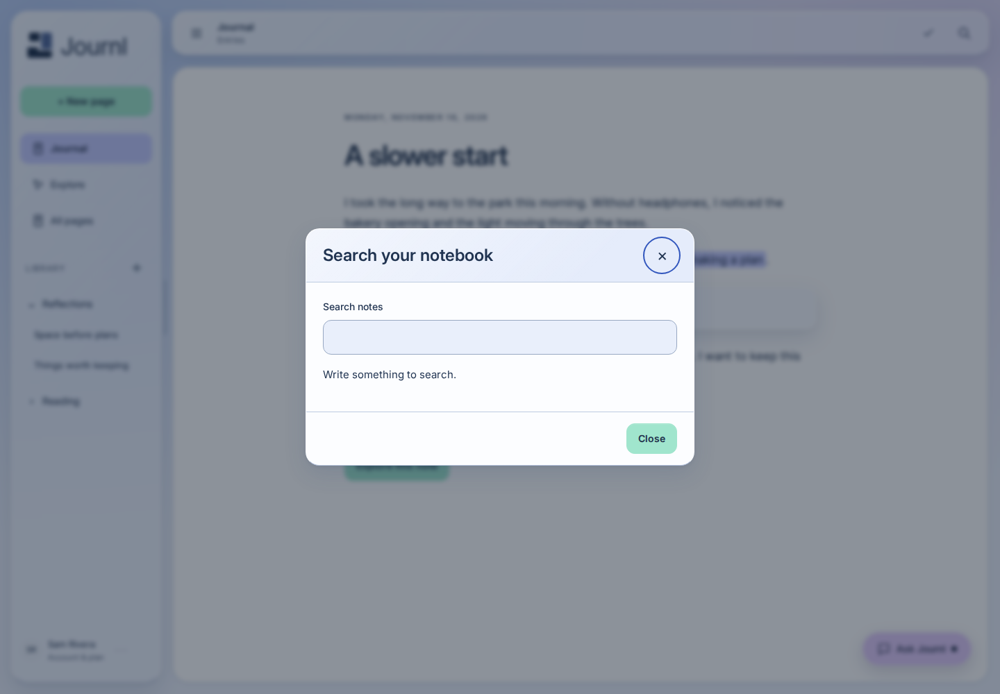
SHA256 097623acc8a819d84c18f915c4b0cb6c02639c4d622c423eba77d35cb6aa06d7
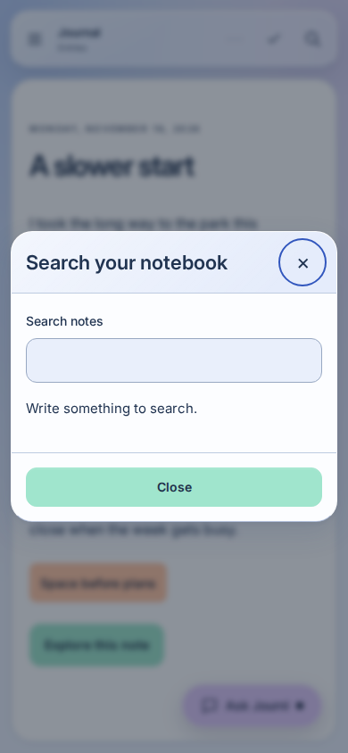
SHA256 773fa5bb754323888ed3c9645fd100a08d76ccfc0d7a2c4144fcfd4ebbc357ca

SHA256 94d534b78992375e5c5de25617aee675a2a69ea75532914d9ae9d94aa844f66e
SHA256 532ccd5e601d221fb2a879ee3adcd1f473ada988bbfedb519c9f64a809ade99e
Search your notebook
search-loadingActions and implementation pointers
× · Close
apps/web/src/app/(app)/@header/default.tsxapps/web/src/app/(app)/@header/_components/app-header.tsxapps/web/src/components/ui/sidebar.tsxapps/web/src/app/(app)/@header/_components/header-search-modal.tsx
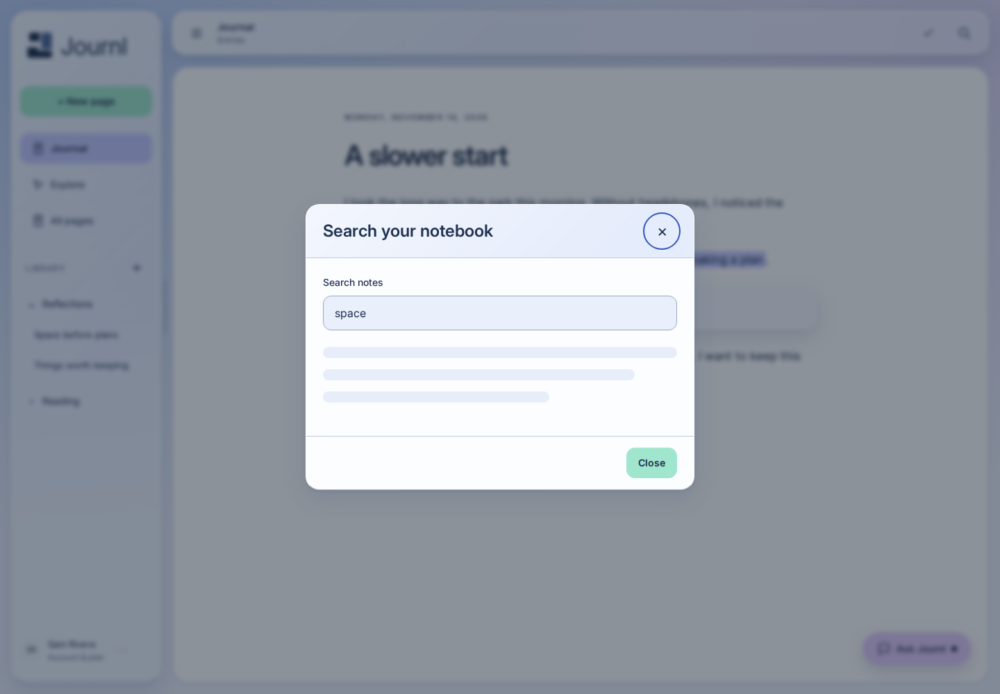
SHA256 2b9f6d5e532ae9d0a427db889d5c60098bdbb05f2061dfe942af2457c763fde6

SHA256 39c0a85b6e1dc720ce3f36c7a3d74d3bf6039c3854b69238a9804e9b8236e653
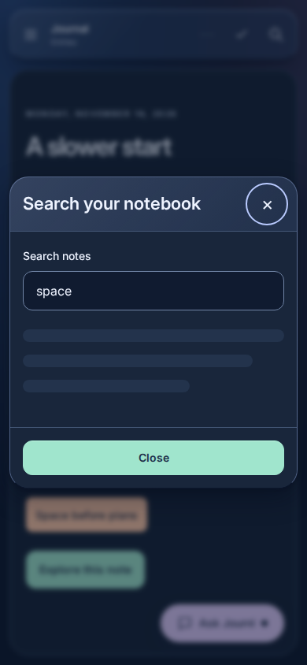
SHA256 ca15a473cdf6240a7df97e6329f19508de2a2cfee15deeac1b3113c9562eea65

SHA256 b326c3dfb29539526b8fd9080a52224ebfdc5bb300b827e9a997374a4871c7da
Search your notebook
search-resultsActions and implementation pointers
× · Close
apps/web/src/app/(app)/@header/default.tsxapps/web/src/app/(app)/@header/_components/app-header.tsxapps/web/src/components/ui/sidebar.tsxapps/web/src/app/(app)/@header/_components/header-search-modal.tsx

SHA256 2508ff394ea5d7a6e790460389676be4a60315d5c9e45f5fa371cc4bad1739fd
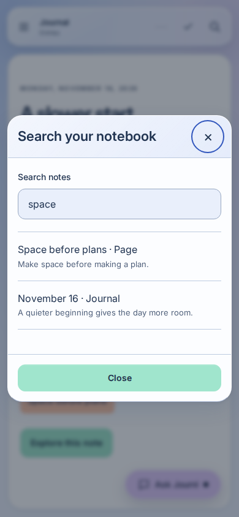
SHA256 ecb127c51d1e507727b1b6dd361567f2d9c58c99ba2d6a8cccaae0d408b74195
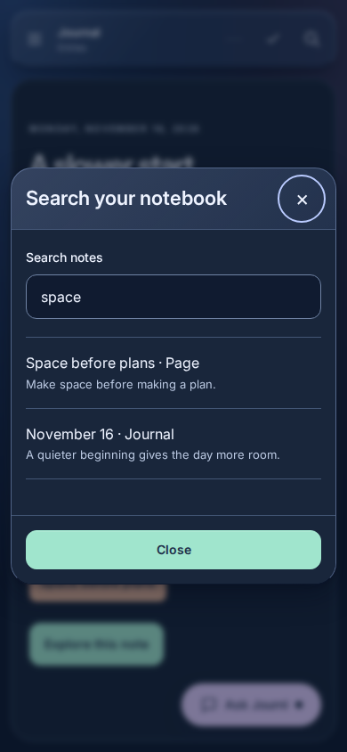
SHA256 f36e6dd9aeeb4446b324b493eabec7ff86d5d52e2e899639393afb752c499d87
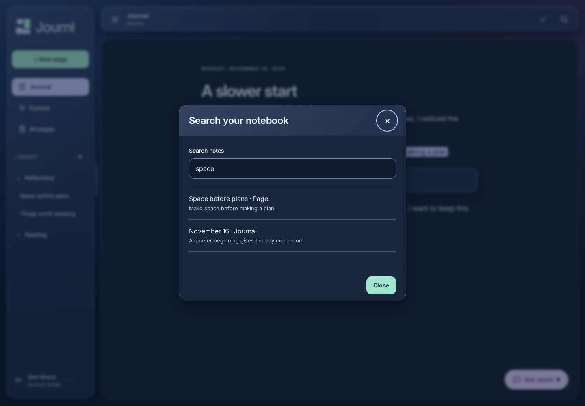
SHA256 0f07bb4bad570dc9440f8b6fa7133d3dd395cb95dd179d5998ce2241ca1ec97d
Search your notebook
search-emptyActions and implementation pointers
× · Close
apps/web/src/app/(app)/@header/default.tsxapps/web/src/app/(app)/@header/_components/app-header.tsxapps/web/src/components/ui/sidebar.tsxapps/web/src/app/(app)/@header/_components/header-search-modal.tsx

SHA256 45385f4647b11282d376e0001bdacb2f728e57e843372db0d98c5a4042896d48
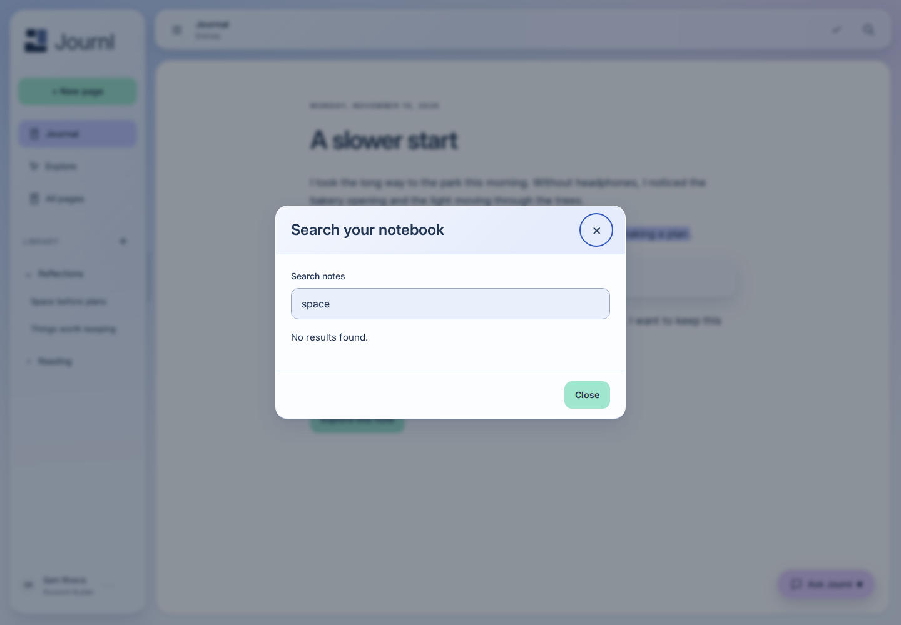
SHA256 a8747d4d829e31a771de6b628854f91f2b6e82a78d59b8decff8dea5fff379ac

SHA256 f5f835703c8e7d42375972ca36327821e984632b84c037812e830decb0533fbb
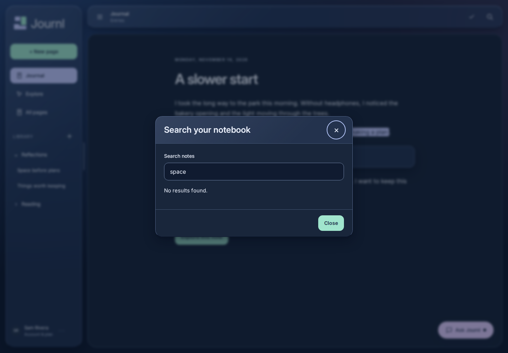
SHA256 0c513325d9275cb9ed7ee83727b8e0138613602908929fd4a2bb13951d4f6163
Search your notebook
search-errorActions and implementation pointers
× · Close
apps/web/src/app/(app)/@header/default.tsxapps/web/src/app/(app)/@header/_components/app-header.tsxapps/web/src/components/ui/sidebar.tsxapps/web/src/app/(app)/@header/_components/header-search-modal.tsx

SHA256 bd4bf1af174f380b18c0397528ed47d2e38841a55e2cb10d512851f386b258c6

SHA256 2bd2d3dd0788221b6ebd299bfec9c5e1c2496ec67de031eef48ea690070e5197

SHA256 17a9bf5d2d9e0713b3823a963096b2166501a1ca134a18f18ae32c816e30b945
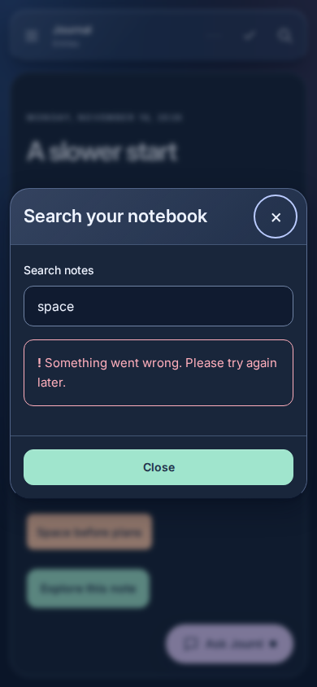
SHA256 4a064a4ea041693441e21a4a76aa5155be5e0edd8b69eae879e67abce6fffc21
Journal context bar
context-journalActions and implementation pointers
+ New page · Journal · Explore · All pages · ⌄ · Reflections · › · Reading · Space before plans · Explore this note · Ask Journl · Today’s Journal · Close · Instant · Thinking
apps/web/src/app/(app)/@header/default.tsxapps/web/src/app/(app)/@header/_components/app-header.tsxapps/web/src/components/ui/sidebar.tsx

SHA256 e494ecbcc7e6f5aa8719af994ffdc6c32eb03c9e58cdc9af00b9d2b391b8fa0c

SHA256 d6b171c9e55bcc2155454c933216df724a9e01a31a197ed10ed66ab7cdbb1bb6

SHA256 d25ac20778ec08d0f5933c2abe737cdd0af8ea89b69964f61dd4fdd2bfb5bd0c

SHA256 3820bd0d84432336263ca3c70a01d114377f927b4a06e3cc804f4c9182ad959d
Page context bar
context-pageActions and implementation pointers
+ New page · Journal · Explore · All pages · ⌄ · Reflections · › · Reading · Space before plans · Explore this note · Ask Journl · Today’s Journal · Close · Instant · Thinking
apps/web/src/app/(app)/@header/default.tsxapps/web/src/app/(app)/@header/_components/app-header.tsxapps/web/src/components/ui/sidebar.tsx

SHA256 096f020f5e078386332705df1150fd947e72a12ba5871562931da9b09555b444

SHA256 d34df59adf633df9aaae428b907dd3855bfdb728a8fb1c8ff0ee9c252603a86b

SHA256 a03af6c24adc3328a271a5093712d503cb023459afe58090daecffed3cab3831
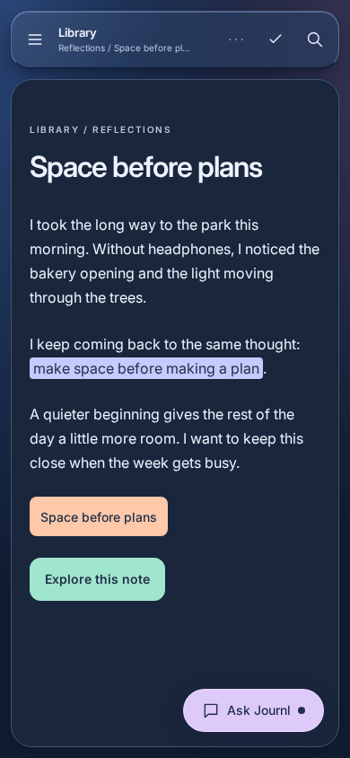
SHA256 2da798bf7588005ec5a23342571e9c68a5b2cd14cdcc709c12481c876163f811
Explore context bar
context-exploreActions and implementation pointers
+ New page · Journal · Explore · All pages · ⌄ · Reflections · › · Reading · Unlinked notes ⌄ · Newest first ⌄ · List · Graph · Space before plans · Open thread · Ask Journl · Today’s Journal · Close · Instant · Thinking
apps/web/src/app/(app)/@header/default.tsxapps/web/src/app/(app)/@header/_components/app-header.tsxapps/web/src/components/ui/sidebar.tsx

SHA256 0e848a131f50801c114cdff3cfcc2e7932cc068b7d8f5b4718a8ea67bb52cab8

SHA256 b0b763c846bd4fe6101c8d0ef4f38f0f37ba87915aa3009dd219e00fa2cd01cb

SHA256 fcb64135b571d8addedf4332491e44000b0909f55084efa57cd73f3a6aea019f
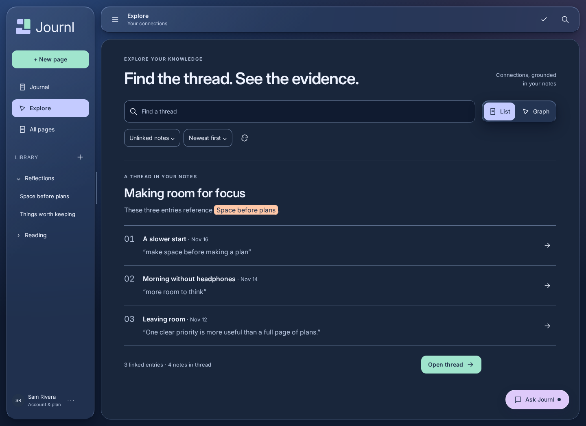
SHA256 762a8700b9551400882d5a0213f98a51bcfc05a8ebd0642b8dc1ddfbe60be0f9


Mobile header · revealed
mobile-header-revealedActions and implementation pointers
+ New page · Journal · Explore · All pages · ⌄ · Reflections · › · Reading · Close · Ask Journl · Today’s Journal · Instant · Thinking
apps/web/src/app/(app)/@header/default.tsxapps/web/src/app/(app)/@header/_components/app-header.tsxapps/web/src/components/ui/sidebar.tsx

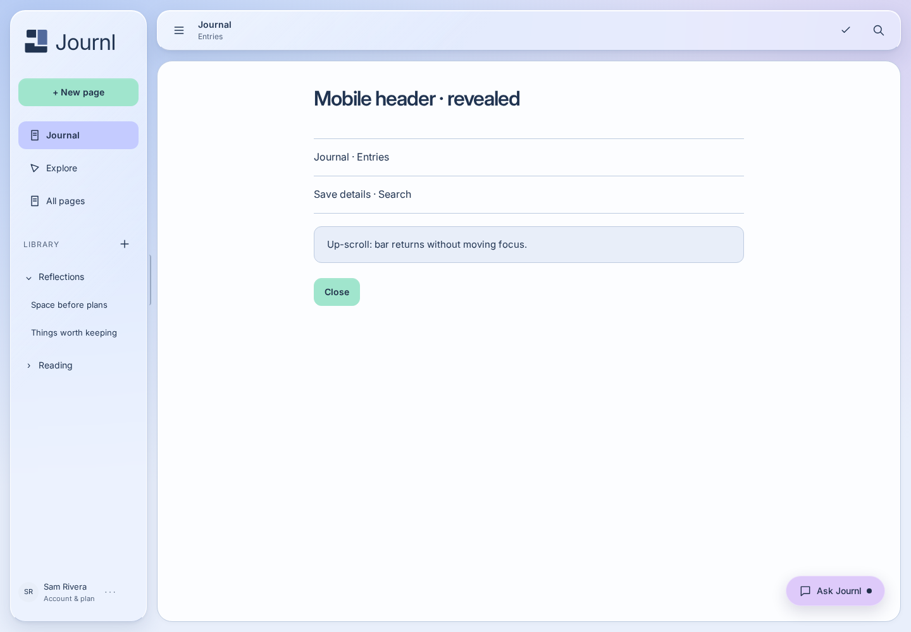
SHA256 d653779c31f70e8a4c56037beb12298965fac7d58fd7cdbead2cfc90c6aa7230

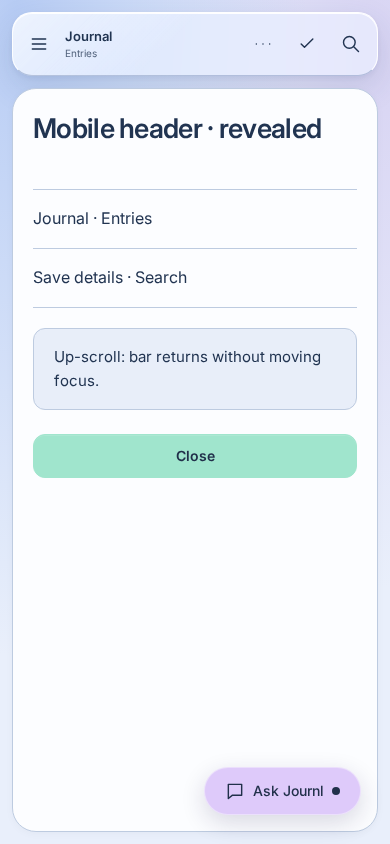
SHA256 3d242145076c7562fbcaa004c3a90103c1e8b80c9bcd86e2c7a3f050c5df63cd

SHA256 d1ab2e532a1f9f8a46a573384a1589a08de2da291475d8bb9c27806cb4b4139f

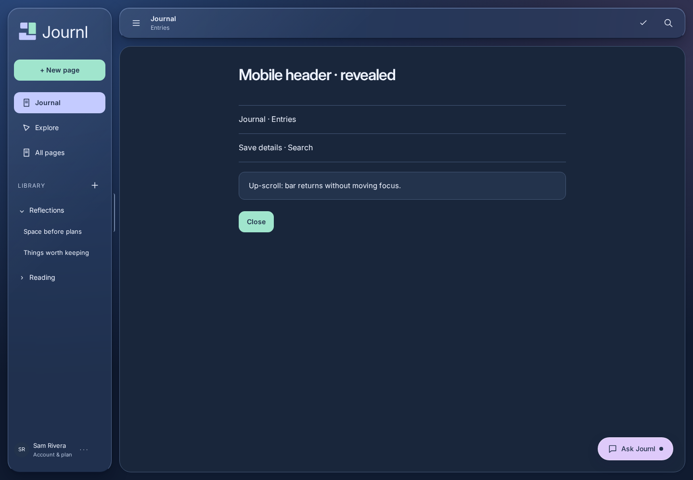
SHA256 a8e1f70a8634fb63c4d7dbc453594c156893639add1f6d954e1c03dd3604f861